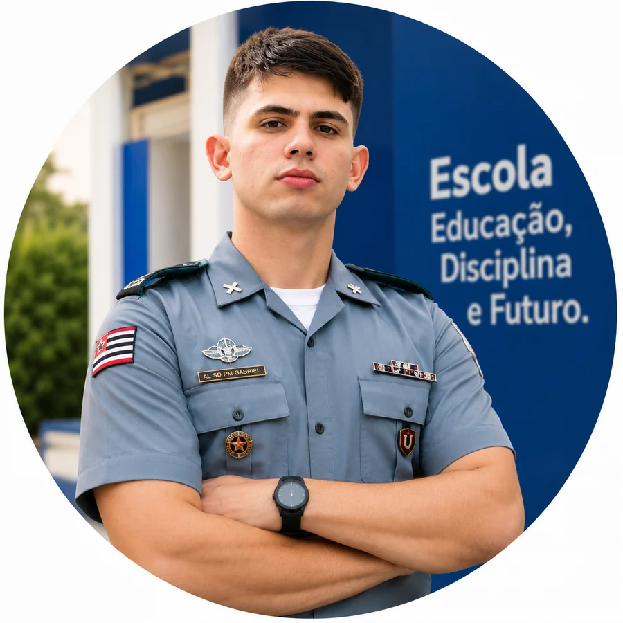

TC QOPM
Carlos Roberto Spíndola Viana
Diretor GeralAtua na direção geral, na condução institucional e na integração entre as dimensões militar, administrativa e pedagógica.
Rede social ↗Conheça os profissionais que atuam no comando, na gestão, na coordenação, na monitoria, na administração e na docência do CMT LII.
A organização da escola reúne profissionais das áreas militar, pedagógica, administrativa e docente, com responsabilidades complementares na formação dos estudantes.
Atua na direção geral, na condução institucional e na integração entre as dimensões militar, administrativa e pedagógica.
Rede social ↗
TEN QOPMResponsável pelo comando do corpo de alunos, pela rotina cívico-militar e pelo acompanhamento disciplinar.
Rede social ↗Atua no planejamento, no acompanhamento pedagógico e na articulação das ações educacionais da escola.
Rede social ↗Colabora com a gestão pedagógica, a organização institucional, a comunicação e as iniciativas de inovação educacional.
Rede social ↗Acompanha o trabalho pedagógico dos Anos Iniciais e as ações voltadas à alfabetização e à aprendizagem.
Rede social ↗Atua no acompanhamento pedagógico dos Anos Finais, apoiando professores, estudantes e famílias.
Rede social ↗Integra a monitoria e contribui com a organização, a disciplina, a segurança e a rotina escolar.
Rede social ↗Atua no atendimento à comunidade e na organização dos registros e procedimentos administrativos da escola.
Rede social ↗Desenvolve ações de ensino nas áreas de Ciências e Informática, contribuindo para a aprendizagem e a cultura digital.
Rede social ↗